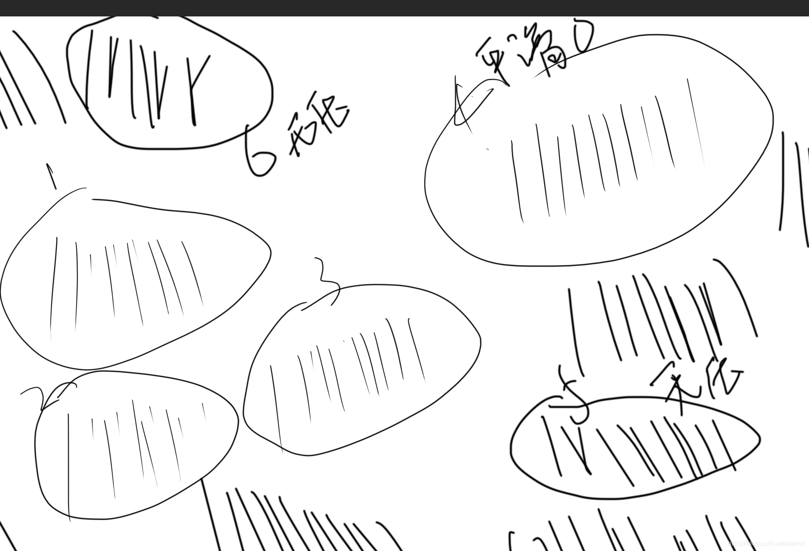
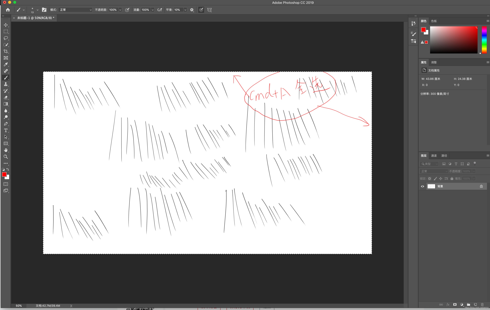

试了在macos的下面使用photoshop 笔画延时,卡顿，经常画得快就偶尔丢几笔，直线变折线，
Photoshop 2019 20.0.3 ， Macos Catalina 10.15.5.
也是非常多的人碰到了， 我查了并做了以下尝试：
1. 关闭平滑,设置为零
2.关闭压力
3.打开首选项－常规－性能, 选择图形处理器设置－高级， 将第一项改为正常或基本
4. 关闭标尺
5.点击画笔设置,勾选间距一栏，并将间距数值调整到40以上100以下
6.启动Photoshop的时候按入 Command + option + shilft ，删除设置
7.完成删除photoshop, 重新安装.
8.安装photoshop 2020
9.升级wacom驱动
10.重新安装wacom驱动
以上尝试， 1， 2， 有改善，但问题是没有解决的，其它办法完全没有效果的， 以下的各个办法试出来的结果。

使用其它软件来绘图是没有问题的，如excel，自动的图片编辑。所以感觉好像是photoshop本身的问题。
但是全部设置都设置过了，一点用处都没有。
百无聊赖，我不停的快速画直线，突然我发现问题没有了，定睛一看和比较一下设置，结果发现没有任何设置上不同，只是画布是处于全选状态，原来是我不小心cmd + A全选了图层，我把cmd + D 把图层选择去掉了之后，问题又回来了，再cmd +A 选上，问题消失，啊。。。
在全选的状态下，开回10%的平滑，开压感，都完全没有问题，以我最快的速度来画直线，一笔都不丢，也不会变折线，也不延时，不卡顿. 测试结果如下图:

看来是photoshop的算法有问题，限了范围计算就不会出错，或更快了？
Anyway 问题算是绕过了，毕竟全选在画的时候是没有什么副作用的，不影响实际。
写个贴子， 希望可以帮忙到有同样问题的人。